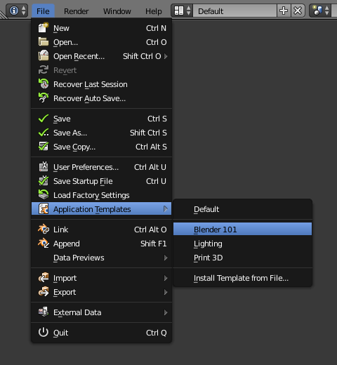
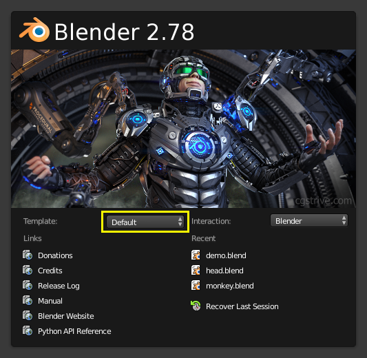

Application Templates¶
Usage¶
Application templates are a feature that allows you to define a re-usable configuration that can be selected to replace the default configuration, without requiring a separate Blender installation or overwriting your personal settings.

Using templates from the file menu. |

Selecting a template from the splash screen. |
{kind=link}
{kind=link}
Application templates can be selected from the splash screen or the file menu (as shown above).
When there are no templates found the menu will not be displayed on the splash screen.
New application-templates can be installed from the file menu.
If you would like to keep the current application-template active on restarting Blender, save your user-preferences.
Motivation¶
In some cases it's not enough to write a single script or add-on, and expect someone to replace his user-preferences and startup file, install scripts and change his key-map.
The goal of application-templates is to support switching to a customized configuration without disrupting your existing settings & installation.
This means people can build their own applications on top of Blender that can be easily distributed.
Details¶
An application-template may define its own:
- Startup File
- The default file to load with this template.
- User Preferences
Only certain user-preferences from a template are used:
- Themes.
- Add-ons.
- Keymaps.
- Viewport lighting.
- Splash Screen
- Templates may provide their own splash screen image.
- Python Scripts
While templates have access to the same functionality as any other scripts, typical operations include:
- Modifying and replacing parts of the user interface.
- Defining new menus, key-maps & tools.
- Defining a custom add-on path for template specific add-ons.
Templates also have their own user configuration so saving startup while using a template won't overwrite your default startup file.
Directory Layout¶
Templates may be located in one of two locations within the scripts directory.
- Template locations:
{BLENDER_USER_SCRIPTS}/startup/bl_app_templates_user{BLENDER_SYSTEM_SCRIPTS}/startup/bl_app_templates_system
User configuration is stored in a subdirectory:
- Without a template:
./config/startup.blend./config/userpref.blend- With a template:
./config/{APP_TEMPLATE_ID}/startup.blend./config/{APP_TEMPLATE_ID}/userpref.blend
See Configuring Directories for details on script and configuration locations.
Template Contents¶
Each of the following files can be used for application templates but are optional.
startup.blend- Factory startup file to use for this template.
userpref.blendFactory user-preferences file to use for this template.
(As noted previously, this is only used for a subset of preferences).
splash.png,splash_2x.pngSplash screen do override Blender's default artwork (not including header text).
Must be
501x230or1002x460(used for HiDPI monitors).__init__.py- A Python script which must contain
registerandunregisterfunctions.
Ghi chú
Bundled blend-files startup.blend and userpref.blend are considered Factory Settings
and are never overwritten.
The user may save his own startup/preferences while using this template which will override them.
The original template settings can be loaded using: Load Template Factory Settings from the file menu in much the same way Load Factory Settings works.